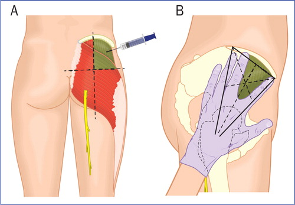
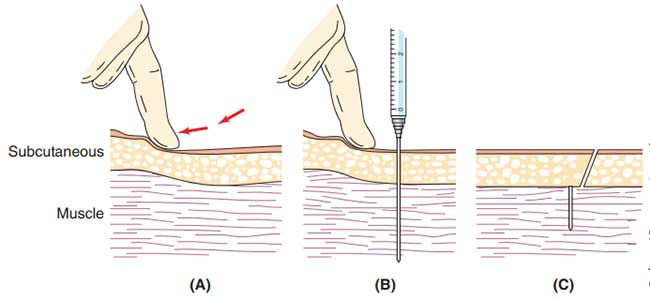
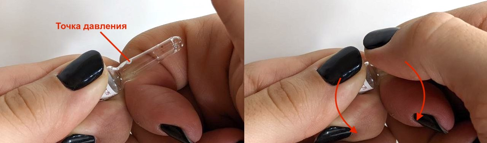

Предисловие
Эта книга — сборник знаний по трансфеминной ГТ, созданный транслюдьми для транслюдей.
Мы стараемся объяснять вещи простым языком, основываемся на научных данных и врачебных рекомендациях (в основном это WPATH SOC 7 и SOC 8, Transfemscience).
Мы надеемся, что эта книга даст вам общее представление о процессе гормонотерапии, развеет страхи и недопонимания и, вместе с тем, убережёт вас от опасных для здоровья ошибок, поможет наладить разговор с эндокринологами и другими врачами, ответит на вопросы «с чего начать?» и «что делать дальше?», а также поможет тем, у кого нет доступа к профессиональной врачебной помощи.
Помните, что здесь приведены лишь общие сведения, эта книга не даёт вам компетентность в области эндокринологии. Подходите к переходу ответственно, заботьтесь о себе и своём здоровье, не пренебрегайте анализами, в непонятных ситуациях обращайтесь за помощью к врачам и помогающим специалистам.
Мир вам и любовь 💜
Введение
Черновик
Эта статья ещё не закончена и не проверялась на корректность. Используйте осорожно!
Вторичные половые признаки человека в значительной степени формируются под воздействием половых гормонов. По этой причине смещение гормонального фона с типичного мужского профиля на женский вызывает демаскулинизацию (снижение выраженности мужских половых признаков) и стимулирует феминизацию (развитие женских половых признаков).
Эффекты от этого включают в себя рост груди, распределение подкожного жира по женскому типу, умягчение кожи и уменьшение количества кожных реакций (прыщей, акне и пр.), уменьшение запаха от тела, остановку выработки спермы, и прочее.
(?) Кроме того, изменение гормонального фона влияет и на психоэмоциональное состояние: изменяется либидо, повышается яркость эмоций и качество реакций на них.
Скорость изменений очень индивидуальна и зависит от возраста. В среднем они начинают быть заметны через полгода после начала гормонотерапии и достигают своего пика примерно через два года. В отдельных случаях процесс может затянуться, так что следует быть к этому готовыми, не паниковать и не поднимать дозы препаратов до опасных значений.
Гормоны
Половые гормоны человека можно разделить на три вида: эстрогены (E), андрогены и прогестогены (P). Именно с ними работает гормональная терапия.
-
Эстрогены — женские половые гормоны — вызывают феминизацию (Wiki).
Основным и самым важным для феминизации эстрогеном является эстрадиол (E2).
(?) Второй эстроген, на который обращают внимание — это эстрон (E1). Какое-то время назад была выдвинута теория, что эстрон, который может получаться в печени при избытке эстрогена, мешает феминизации, и что нужно следить за его уровнем. Теория, впрочем, не имеет научных доказательств и ныне оставлена даже своим автором (TFS).
-
Андрогены — мужские половые гормоны — вызывают маскулинизацию (Wiki). Именно они ответственны за развитие тела по мужскому типу, включая развитие члена и яичек, понижение голоса, рост волос на теле и лице. Кроме того, андрогены замедляют рост груди, вызываемый эстрадиолом.
Основными андрогенами являются тестостерон (T) и дигидротестостерон (DHT).
-
Прогестогены — женские половые гормоны, не имеющие прямого влияния на феминизацию (Wiki). Они регулируют женскую репродуктивную систему и разные процессы при беременности. Они также могут снижать влияние эстрогенов на некоторые части тела — матку, влагалище, грудь (Wiki).
Использование прогестогенов при гормонотерапии противоречиво и является индивидуальным выбором каждой персоны: кто-то говорит, что они помогают эмоциональному состоянию, кто-то — что делают хуже. Научных исследований на этот счёт не проводилось, так что мы не знаем, какие из этих случаев — простое совпадение, а какие — закономерность.
Основным прогестогеном является прогестерон (P4).
Половые гормоны производятся в основном в гонадах — яичниках и яичках. Яичники производят много эстрогенов и мало андрогенов, яички производят много андрогенов и мало эстрогенов. Этим объясняются различия между людьми с различным акушерским (присвоенным при рождении) полом. По этой же причине основные изменения во внешнем виде начитаются в процессе полового созревания, когда гонады становятся активными.
Влияние на тело половые гормоны оказывают через активацию (агонизм) эстрогенных рецепторов (ER), андрогенных рецепторов (AR) и рецепторов прогестерона (PR). Рецепторы, будучи активированными, регулируют экспрессию генов в ядре клетки, приводя к формированию различных белков, клеток и тканей.
(?) Процесс регуляции экспрессии генов работает всегда, так что гормональная терапия имеет видимые эффекты в любом возрасте. Конечно, со временем скорость развития новых тканей снижается, и выраженность эффектов от терапии снижается вместе с ней, однако возраста, после которого уже «слишком поздно», не существует.
Ципротерона Ацетат
Черновик
Эта статья ещё не закончена и не проверялась на корректность. Используйте осорожно!
Ципротерона Ацетат (Cyproterone Acetate, CPA) — блокатор тестостерона, широко используемый в трансфеминной гормональной терапии. Выпускается в форме таблеток под марками «Андрокур» и «Ципротерон-Тева».
С биологической точки зрения Ципротерона Ацетат является мощным прогестогеном и антиандрогеном. С этим связано два основных его действия.
Прогестогенный эффект снижает выработку тестостерона яичками. Активируя рецепторы прогестеронов, CPA оказывает антигонадотропное действие. Это приводит к снижению уровней ЛГ и ФСГ, что, в свою очередь, замедляет или останавливает выработку половых гормонов.
Антиандрогенный эффект снижает влияние тестостерона на организм. Будучи конкурентным антагонистом рецептора андрогенов, CPA способен предотвращать активацию этих рецепторов тестостероном.
Прогестогенные эффекты Ципротерона Ацетата намного сильнее антиандрогенных, и проявляются при меньших дозах. Именно они интересны для трансфеминной гормональной терапии.
Если CPA применяется сам по себе, его прогестогенного эффекта достаточно для подавления уровней тестостерона на 50 – 70%. Совместное применение CPA и эстрогенов, даже в маленьких дозах, увеличивает этот эффект до 95%, позволяя подавить тестостерон до женского уровня.
Цисгендерным женщинам CPA назначают как прогестоген в качестве противозачаточного средства. Типичные дозы составляют от 1 до 2 мг/день.
Цисгендерным мужчинам CPA назначают как антиандроген для лечения различных заболеваний, от тяжёлого акне до рака простаты. Типичные дозы составляют от 50 до 300 мг/день. При этом столь высокие дозы могут приводить к крайне негативным побочным эффектам: головной боли, депрессии, высоким уровням пролактина, пролактиномам.
Долгое время для трансфеминной гормональной терапии применялись дозы от 50 до 100 мг/день, однако сейчас ситуация меняется. Недавние исследования показали, что дозы в районе 5 – 10 мг/день оказывают максимальный эффект на уровень тестостерона, вызывая при этом меньшее количество побочных эффектов.
Ципротерона Ацетат часто продаётся в таблетках по 50 мг. Такие таблетки можно разрезать на четыре части и принимать раз в день или раз в два дня, получая эффективную дозу в 12.5 или в 6.25 мг/день.
Введение
Potency, Conventional Dosages, and Health Risks
Testosterone Suppression with Low and High Doses
Testosterone Suppression in Combination with Estrogen
Clinical Adoption of Lower Doses
Androgen Receptor Antagonism with Higher Doses
Рекомендуемые дозы
Для максимально эффективного подавления уровней тестостерона необходимо комбинировать CPA с препаратами эстрогенов. Рекомендованные дозы приведены в таблице ниже:
| Уровень | Доза препарата | Комментарий |
|---|---|---|
| Начальная доза | 5 – 6.25 мг/день | Половина таблетки 10 мг раз в день или четверть таблетки 50 мг раз в два дня. |
| Максимальная доза | 10 – 12.5 мг/день | Одна таблетка 10 мг раз в день или четверть таблетки 50 мг раз в день. |
Целевой уровень тестостерона для трансфеминных персон — меньше 50 нг/дл. При этом для наибольшей эффективности CPA уровень эстрадиола должен быть больше 65 пг/мл.
Начните с минимальной дозы и проверьте уровни эстрадиола и тестостерона через месяц применения. Если уровень тестостерона всё ещё выше необходимого, отрегулируйте дозы эстрадиола и CPA и проведите повторный замер ещё через месяц.
Для более точного контроля дозы таблетки Ципротерона Ацетата можно разрезать на части специальным ножом (см. таблетницы с делителем). Помимо этого можно принимать таблетки раз в два или три дня: период полувыведения этого лекарства из организма составляет около 1.5 – 2 дней, и в отдельных случаях может достигать 4 дней [Wiki, Wiki Table].
{kind=link}
В случае, если прогестогенного действия CPA недостаточно для полного подавления тестостерона, можно добавлять к нему другие антиандрогенные препараты, тоже в низких дозах: Бикалутамид 6 – 25 мг/день или Спиронолактон 100 – 200 мг/день.
Помимо увеличения дозы CPA можно увеличивать дозу эстрадиола, это также способствует снижению уровня тестостерона.
Для достижения прогестогенного эффекта, схожего по свойствам с активностью прогестогенов при лютеиновой фазе менструации, трансфеминным людям рекомендуется дозировка в 2.5 мг/день (четверть таблетки 10 мг) или 3.125 мг/день (шестнадцатая часть таблетки 50 мг).
Updates
Внутримышечные инъекции
Подготовка
Вам понадобятся:
- удобное и хорошо освещённое место;
- чистая поверхность, например, помытая с мылом тарелка;
- препарат;
- шприц подходящего размера с зелёной или чёрной иглой 40 мм. Если берёте препарат из многоразовой виалы с резиновой мембраной — нужно две иглы, ну или два шприца;
- три спиртовые салфетки;
- контейнер для утилизации игл. Подойдёт что-то из толстого пластика или стекла. Не кладите иглы в пластиковые бутылки — они легко прокалываются;
- пластырь.
Куда колоть?
Колоть лучше всего в попу — это самое простое и безболезненное место.
Поделите полупопие на четыре части, как показано на рисунке. Горизонтальное деление проходит там, где заканчивается впадина между ягодицами. Вертикальное — примерно посередине ягодицы. Колоть нужно в центр верхнего внешнего квадранта. Получается весьма высоко и почти сбоку — это нормально; пощупайте то место — там большая и толстая мышца. Не делайте уколы в ту часть попы, на которой сидите — это намного больнее, а ещё там рядом cедалищный нерв.

Перед уколом убедитесь, что рядом нет синяков или травм, опухлостей, аллергических реакций. Периодически меняйте места инъекций: чередуйте их, сдвигайтесь относительно старых уколов.
Как колоть?
Перед уколом разгладьте кожу и сдвиньте её на пару сантиметров относительно мышцы, чтобы препарат не вытек обратно.
Вводите шприц под углом 90 градусов; держите его, словно дротик. Движение должно быть уверенным и достаточно быстрым, однако торопиться или колоть с размаху не стоит.
Не вводите иглу до конца — оставьте 5 – 10 миллиметров, чтобы случайно не сломать её у основания. Препарат выдавливайте медленно, примерно 1 мл за 10 секунд. После того, как препарат будет введён, не доставайте иглу сразу, дайте маслу распределиться в месте укола, секунд десять.

Как вскрывать ампулу?
На всех современных ампулах уже есть надрез на шейке, он обозначен кольцом или точкой. Если такого нет — придётся подпилить шейку ампулы пилкой.
Перед вскрытием протрите ампулу спиртовой салфеткой, проверьте, что в ней не плавает посторонних частиц, что препарат привычного цвета.
Стряхните весь препарат из головы ампулы, вращая её и постукивая пальцем.
Возьмите тело ампулы в одну руку, а голову — в другую, как показано на картинке. Если на ампуле есть точка, она должна оказаться под большим пальцем. Теперь сломайте ампулу пополам. Если она не ломается, попробуйте немного повернуть её. Чтобы не пораниться осколками, можно завернуть голову ампулы в спиртовую салфетку. Чтобы было удобнее ломать, можно прижать руки к груди или животу.

Пошаговый алгоритм
- тщательно помойте руки, потрите между пальцев и под ногтями;
- подготовьте всё необходимое;
- если делаете укол кому-то — положите их на живот, если делаете себе — встаньте;
- найдите место, куда будете колоть, 30 секунд сильно потрите его спиртовой салфеткой, дайте спирту высохнуть;
- протрите руки и шейку ампулы второй спиртовой салфеткой, затем вскройте ампулу и наберите раствор в шприц;
- если используете многоразовую виалу — замените иглу на новую;
- если делаете укол себе — встаньте ровно, перенесите весь вес с ноги, над которой будете колоть, расслабьте её;
- положите свободную руку на место инъекции, растяните кожу пальцами, сдвиньте её немного;
- уверенно введите шприц под 90 градусов, оставляя 10 мм иглы на поверхности;
- медленно выдавите препарат, подождите 10 секунд и вытащите иглу;
- сбросьте иглу в контейнер, место прокола протрите третьей спиртовой салфеткой и заклейте пластырем;
- готово. Можно обнять ту няшу, которой делали инъекцию, или взять мягкую игрушку, если кололи сами себя :3
Гигиена при уколах другому человеку
Когда делаете укол кому-то ещё, важно избежать контакта с кровью. Для этого нужно не уколоться и не заляпаться капельками крови, если они вытекли из места укола:
- делайте процедуру в перчатках, особенно если вокруг ногтей есть порезы или заусенцы;
- чтобы случайно не пораниться, не надевайте защитный колпачок обратно на иглу — сразу бросайте её в контейнер;
- в медицинских контейнерах для сбора острых отходов есть специальный вырез, позволяющий сбросить иглу со шприца, не касаясь её.
FAQ
Какую иглу взять?
Для внутримышечных уколов нужна игла длиной 40 мм. Диаметр выбирается исходя из вязкости препарата, обычно это 0.8 мм (21g, зелёная), 0.7 мм (22g, коричневая) или 0.6 мм (23g, синяя).
Важно, чтобы игла была хорошо заточена, иначе укол будет болезненным. Можете купить иглы отдельно, попробуйте разных производителей. По моему опыту лучшая заточка у B.Braun, но они дорогие и есть далеко не везде.
Какой шприц взять?
Любой подходящего размера и с подходящей иглой. Обычно берут на 2 мл, так как у более мелких шприцев в комплекте более мелкие иглы.
Если у вас вязкий препарат, и иглы соскакивают, ищите шприцы с коннектором «луер-лок» — это такие, на которые игла накручиватеся, а не насаживается.
В какой позе делать инъекции?
Если делаете укол себе — лучше всего встать, перенеся весь вес с ноги, над которой колете — так мышцы будут максимально расслаблены. Можно попробовать сделать укол лёжа на боку, но нужно следить, чтобы мышцы были расслаблены, не поднимать голову.
Если колете кого-то другого — положите их на живот или на бок, как вам удобнее.
Что со стеклянными осколками ампулы в препарате?
Ничего: нет исследований, которые показали бы, что микрочастицы стекла, оставшиеся от вскрытия ампулы, как-то вредят здоровью. Стекло инертно, и если не вводить его в больших дозах в кровоток, не причиняет вреда.
Если вы всё же тревожитесь из-за этого, можете поискать аспирационные иглы с фильтром на 5 микрометров, и забирать препарат из ампулы ими.
Если вы используете многоразовые виалы, протыкайте мембрану острой иглой под 45 градусов, держа срез иглы к верху (см. vial coring).
Можно ли колоть эстрадиол подкожно?
Так рекомендуют делать некоторые производители инъекций и даже врачи. Это работает, но никаких исследований эффективности и безопасности на этот счёт нет. Все масляные инъекции традиционно вводятся внутримышечно, так что мы рекомендуем не отклоняться от общепринятой практики.
Что делать, если препарат выливается обратно?
- Не вынимать иглу сразу, а подождать десять секунд, пока масло распределится по мышце.
- Перед уколом на пару сантиметров сдвинуть кожу относительно мышцы.
Что делать, если укол получается болезненным?
- Максимально расслабить мышцы перед уколом.
- Вводить иглу под 90 градусов.
- Вводить препарат медленно — 10 секунд на 1 мл.
- Использовать острые иглы. Если вы берёте препарат из многоразовой виалы с резиновой мембраной, игла может слегка затупиться. Попробуйте использовать разные иглы для забора и для укола.
Как правильно утилизировать иглы?
Главное, чтобы вашей иглой никто не мог пораниться: ни дворники, ни животные, ищущие еду на помойках.
Положите иглу в контейнер из толстого пластика, стеклянную бутылку или медицинский контейнер для острых отходов. Не кладите иглы в пластиковые бутылки — они легко прокалываются.
Если в вашем городе есть организации, принимающие медицинские отходы — обратитесь к ним. Если нет — придётся выкинуть это всё в неперерабатываемый мусор. Убедитесь, что контейнер с иглой сложно открыть — например, замотайте его в пищевую плёнку. Хорошей идеей будет подписать контейнер, чтобы никто не попытался его вскрыть. Совсем замечательной идеей будет предварительно продезинфицировать иглы в дезрастворе.